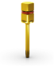
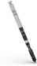
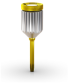
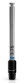
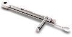

Broca lança
:: Disponível em aço cirúrgico;
:: 2,0mm de diâmetro
103.170

103.170
Conexão torque Neo - chave catraca torquímetro
:: Disponível em aço cirúrgico;
:: Cor amarela para identificação da linha
Curto
16,5mm
105.133
Média
22 mm
105.132
Longa
32 mm
105.157
105.133
105.132
105.157

105.132
105.157
Brocas cônicas
:: Disponível em aço cirúrgico;
:: Sequência de brocas para implantes Zi
103.561
Broca cônica Ø3,5
103.564
Broca cônica Ø3,75
103.570
Broca cônica Ø4,3
103.425
Broca cônica Ø2,0
103.562
Broca cônica (curta) Ø3,5
103.563
Broca cônica (longa) Ø3,5
103.565
Broca cônica (curta) Ø3,75
103.566
Broca cônica (longa) Ø3,75
103.571
Broca cônica (curta) Ø4,3
103.572
Broca cônica (longa) Ø4,3
103.574
Broca cônica (curta) Ø5,0
103.575
Broca cônica (longa) Ø5,0

103.561
103.564
103.570
103.425
103.562
103.563
103.565
103.566
103.571
103.572
103.574
103.575

103.564
103.570
103.425
103.562
103.563
103.565
103.566
103.571
103.572
103.574
103.575
Chave Digital Neo
:: Disponível em aço cirúrgico;
:: Cor amarela para identificação da linha
Curto
21mm
104.058
Média
25 mm
104.060
Longa
37 mm
104.070
104.058
104.060
104.070

104.060
104.070
Brocas countersink
:: Disponível em aço cirúrgico;
103.609
Ø 3,75
103.610
Ø 4,3
103.609
103.610

103.610
Paralelizadores
:: Disponível em titânio;
:: Instrumento para guiar a posição do implante;
:: O diâmetro da banda central corresponde ao diâmetro dos
implantes GM e Zi;
:: Lado menor a ser utilizado após a perfuração de Ø2,0mm;
:: Lado maior para ser utilizado após a última perfuração
antes da instalação do implante.
3,0/3,75
128.020
3,6/4,3
128.022
Macho de rosca
:: Disponível em aço cirúrgico;
111.049
Ø 3,75
111.050
Ø 4,3
111.049
111.050
111.050
Extensor de broca
:: Disponível em aço cirúrgico;
:: Encaixe a broca diretamente na extensão de broca.
103.426
Broca de perfil ósseo com guia Zi
:: Disponível em aço cirúrgico;
:: Utilizado no segundo passo cirúrgico;
:: Conforma o osso ao redor da plataforma do implante,
preparando o perfil de emergência para ser adequado aos
componentes protéticos
103.428
103.428
Chave Catraca Torquímetro
:: Disponível em aço cirúrgico;
:: Encaixe para conexões quadradas;
104.050


104.050
Posicionador Radiográfico Cônico
:: Verifique o eixo em relação às raízes adjacentes utilizando
a identificação dos números
Ø 3,75
129.020
Ø 4,3
129.013
129.020
129.013
129.013